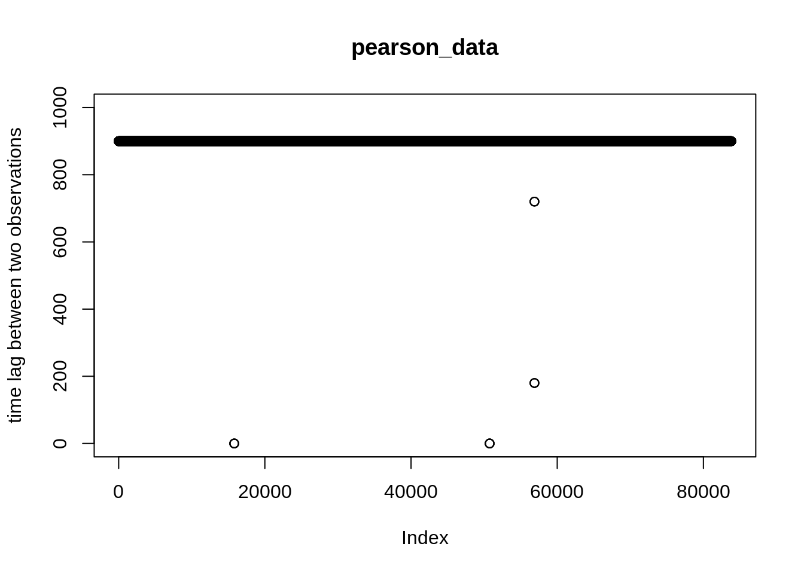

Had a problem while loading the data.guess_max determines how many cells in each column are used to make a guess of the column type. we can provide a guess_max for read_excel to correctly guess the column type.
# A tibble: 124,746 × 23
agency_cd Name site_no datetime tz_cd pH pH-st…¹ DO DO-st…²
<chr> <chr> <dbl> <dttm> <chr> <dbl> <chr> <dbl> <chr>
1 USGS Pear… 3451500 2019-03-01 00:00:00 EST NA <NA> NA <NA>
2 USGS Pear… 3451500 2019-03-01 00:15:00 EST NA <NA> NA <NA>
3 USGS Pear… 3451500 2019-03-01 00:30:00 EST NA <NA> NA <NA>
4 USGS Pear… 3451500 2019-03-01 00:45:00 EST NA <NA> NA <NA>
5 USGS Pear… 3451500 2019-03-01 01:00:00 EST NA <NA> NA <NA>
6 USGS Pear… 3451500 2019-03-01 01:15:00 EST NA <NA> NA <NA>
7 USGS Pear… 3451500 2019-03-01 01:30:00 EST NA <NA> NA <NA>
8 USGS Pear… 3451500 2019-03-01 01:45:00 EST NA <NA> NA <NA>
9 USGS Pear… 3451500 2019-03-01 02:00:00 EST NA <NA> NA <NA>
10 USGS Pear… 3451500 2019-03-01 02:15:00 EST NA <NA> NA <NA>
# … with 124,736 more rows, 14 more variables: SC <dbl>, `SC-status` <chr>,
# Turb_FNU <dbl>, `Turb-status` <chr>, WL_Elev <dbl>, `WL_Elev-status` <chr>,
# Temp_C <dbl>, `Temp-status` <chr>, Q_cfs <dbl>, `Q-status` <chr>,
# Stage_ft <dbl>, `Stage - status` <chr>, Precip_in <dbl>,
# `Precip-status` <chr>, and abbreviated variable names ¹`pH-status`,
# ²`DO-status`
finding the datetime column class in the datasets
[1] "POSIXct" "POSIXt"
[1] "POSIXct" "POSIXt"
Both the datetime columns in the datsets are of the “POSIXct” “POSIXt” class
finding the range of the datetime column for datasets
pearson_data has the data data between time period 2019-03-01 00:00:00 UTC - 2022-09-20 10:30:00 UTC
Restricting the pearson data in between time range of n_149_with_Duans i.e., 2019-05-22 10:00:00 UTC - 2021-10-11 09:55:00 UTC since we have the Ecoli values for this range of data
When found the lag between the time periods of each observation, the lag varies differently between the time periods for n_149_with_Duans but is constant for pearson_data which is 900 secs

Considering only the observations that are in the n_149_with_Duans, merging the pearson_data and n_149_with_Duansby datetime and keeping all the values in n_149_with_Duans
splitting the datetime column into Year, month, day, and time for future data analysis
Source Code
---title: "Data Preprocessing"author: "Sathvik"desription: "Data Preprocessing"date: "10/09/2022"format: html: toc: true code-fold: true code-copy: true code-tools: truecategories: - data preprocessing---# Libraries```{r}knitr::opts_chunk$set(echo =FALSE, warning =FALSE, message =FALSE)library(ggplot2)library(dplyr)library(tidyr)library(plotly)library(readxl)library(tidyverse)```# Load datasets```{r}hotel <-read_csv("_data/hotel_bookings.csv")hotel``````{r}n_149_with_Duans <-read_excel("_data/n=149 with Duans.xlsx")X091522_LABWORKS_DOWNLOAD <-read_excel("_data/091522 LABWORKS DOWNLOAD.xlsx")```Had a problem while loading the data.`guess_max` determines how many cells in each column are used to make a guess of the column type. we can provide a `guess_max` for read_excel to correctly guess the column type. ```{r}pearson_data <-read_excel("_data/1 of 3 - USGS gage data downloaded 092022.xlsx", sheet ="Pearson", guess_max =1048576)``````{r}n_149_with_Duanspearson_data```## finding the datetime column class in the datasets```{r}class(n_149_with_Duans$datetime)class(pearson_data$datetime)```Both the datetime columns in the datsets are of the **"POSIXct" "POSIXt"** class## finding the range of the datetime column for datasets```{r}range(n_149_with_Duans$datetime)````n_149_with_Duans` has the data between time period **2019-05-22 10:00:00 UTC - 2021-10-11 09:55:00 UTC**```{r}range(pearson_data$datetime)````pearson_data` has the data data between time period **2019-03-01 00:00:00 UTC - 2022-09-20 10:30:00 UTC**Restricting the pearson data in between time range of `n_149_with_Duans` i.e., **2019-05-22 10:00:00 UTC - 2021-10-11 09:55:00 UTC** since we have the Ecoli values for this range of data```{r}pearson_data <- pearson_data[pearson_data$datetime >=min(n_149_with_Duans$datetime)& pearson_data$datetime <=max(n_149_with_Duans$datetime),]```When found the lag between the time periods of each observation, the lag varies differently between the time periods for `n_149_with_Duans` but is constant for `pearson_data` which is **900** secs```{r}plot(pearson_data$datetime -lag(pearson_data$datetime), ylim =c(0,1000), ylab ="time lag between two observations", main ="pearson_data")``````{r}plot(n_149_with_Duans$datetime -lag(n_149_with_Duans$datetime), ylim =c(0,1000), ylab ="time lag between two observations", main ="n_149_with_Duans")```Considering only the observations that are in the n_149_with_Duans, merging the `pearson_data` and `n_149_with_Duans`by datetime and keeping all the values in `n_149_with_Duans````{r}merged_data <-merge(pearson_data,n_149_with_Duans, by ="datetime", all.y =TRUE)```splitting the datetime column into `Year`, `month`, `day`, and `time` for future data analysis```{r}merged_data$Date <-as.Date(merged_data$datetime)merged_data <- merged_data %>% tidyr::separate("Date", c("Year", "Month", "Day"), sep ="-")merged_data$Time <-format(merged_data$datetime,"%H:%M:%S")```